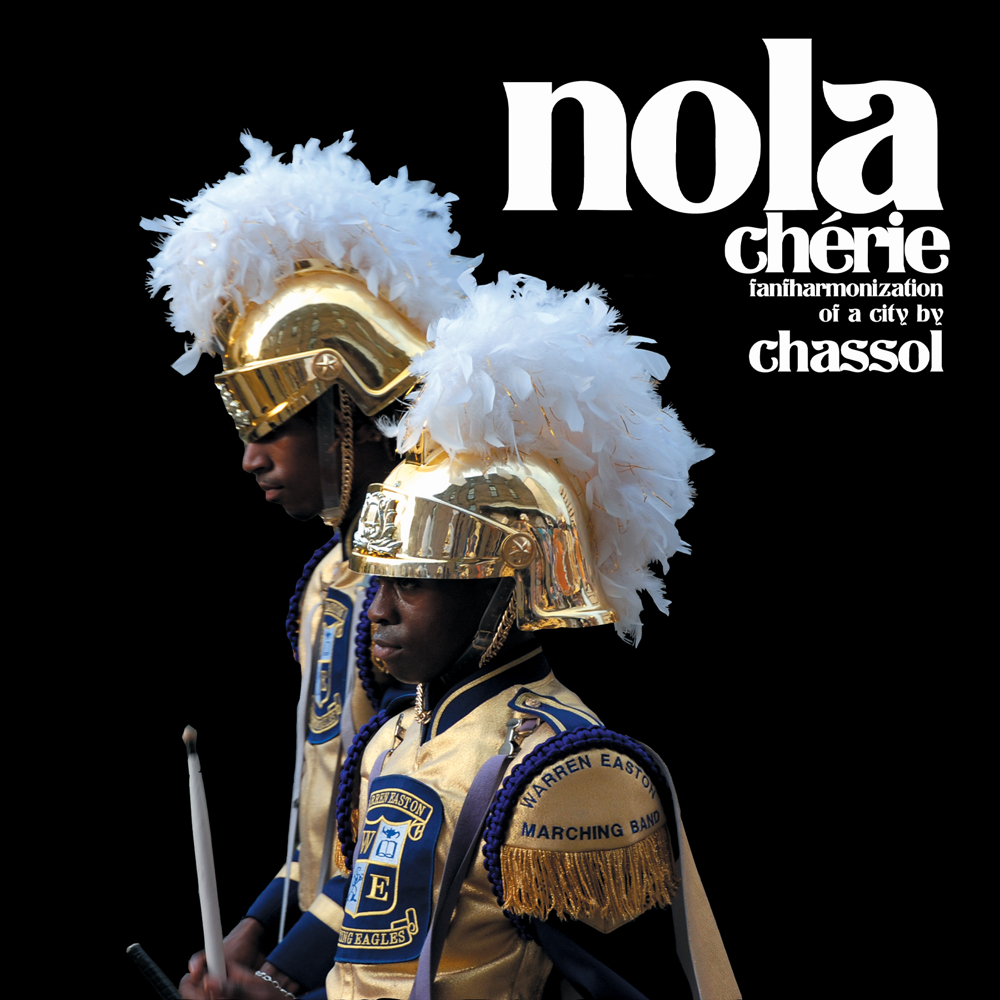
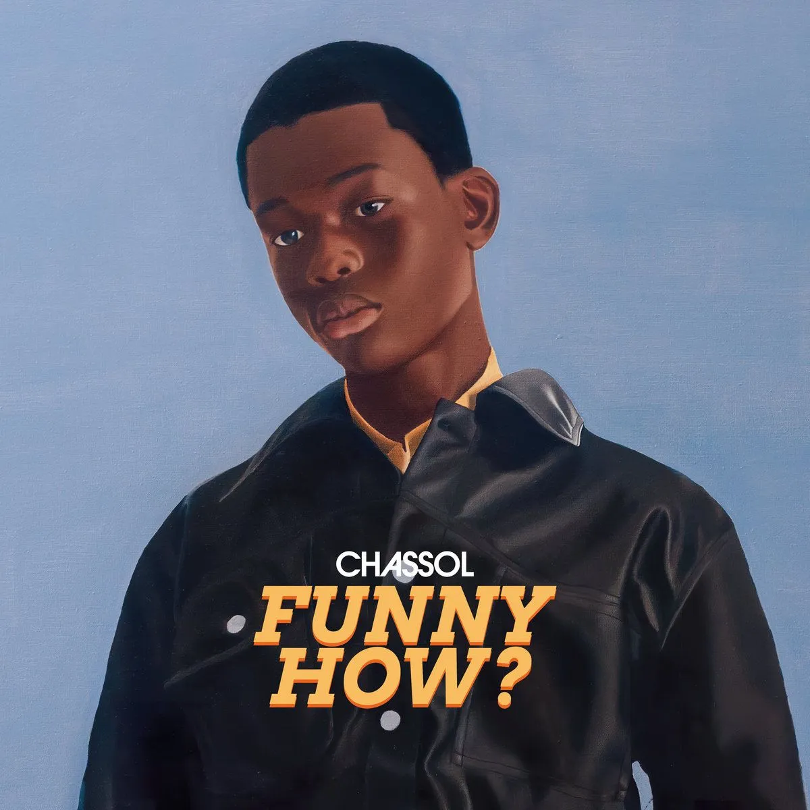
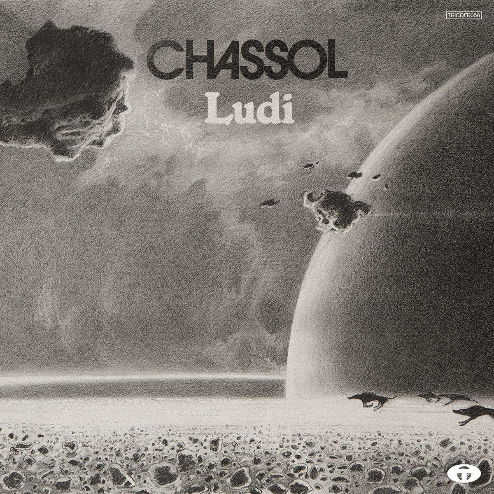
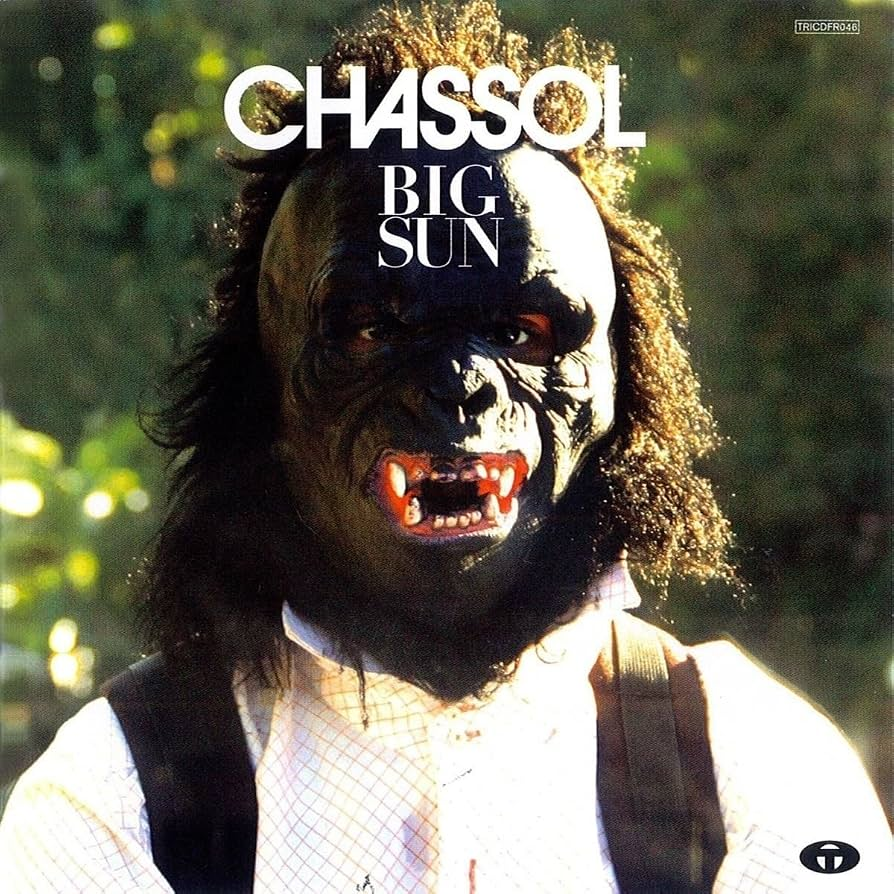
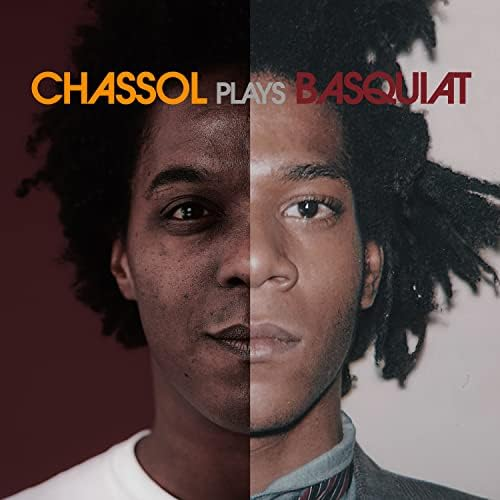
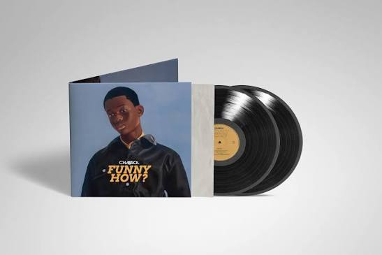
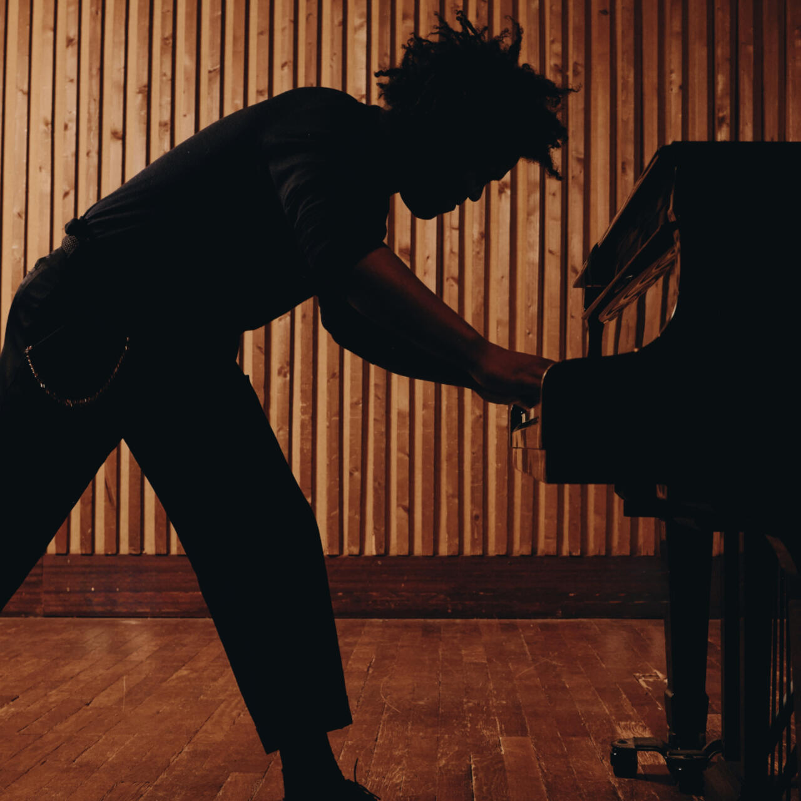
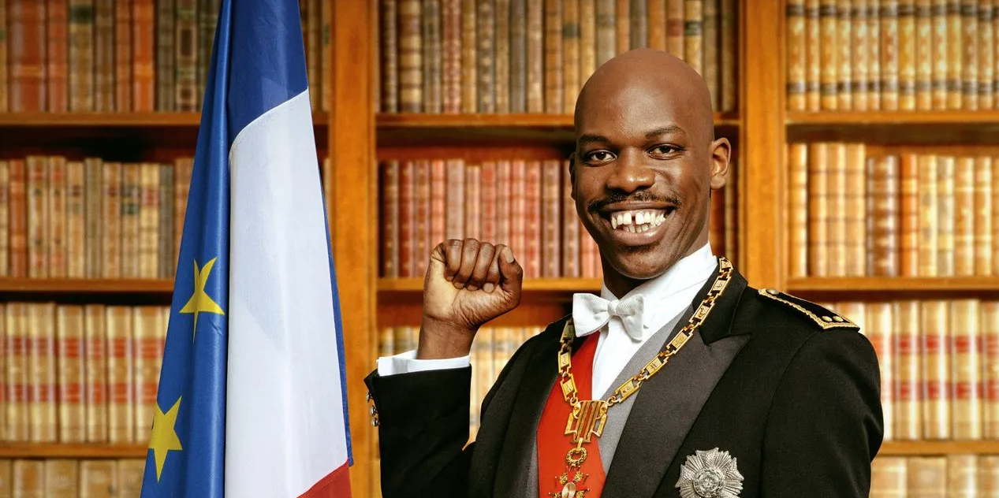
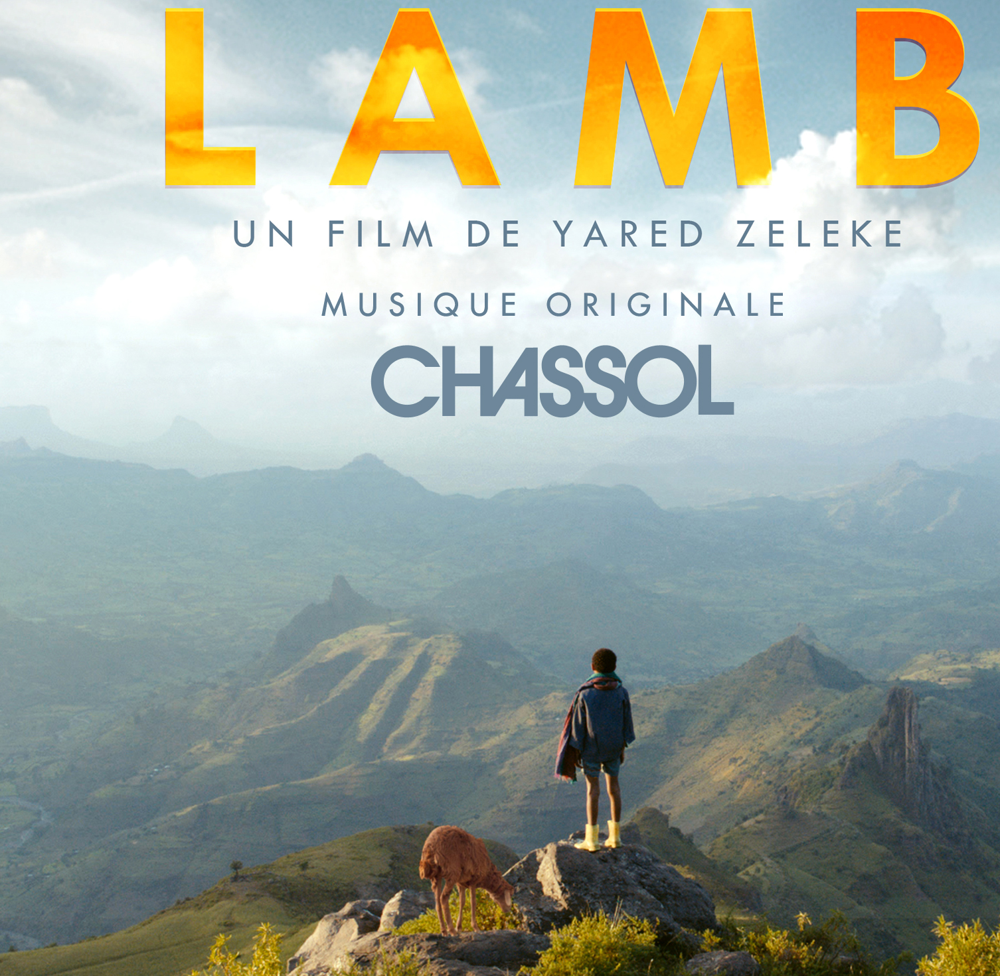
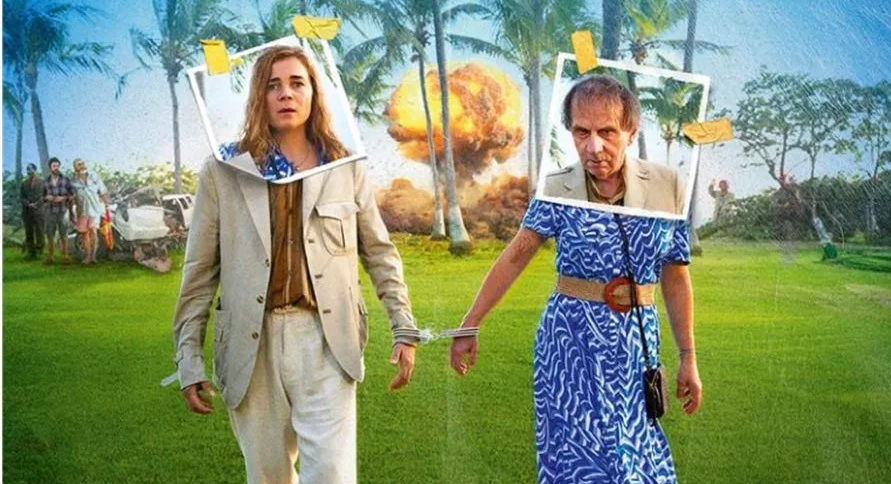

Ultrascore · New Orleans
Nola Chérie
A fantharmonization of a city, moving through parade music, field recordings, voices and landscape.

Albums, films, live, harmonizations
French composer, pianist, arranger and musical director. A body of work moving between albums, audiovisual forms, live performance and music for screen.
Method
Speech, birds, movement, cities and images become musical material. Chassol samples the real, loops it, transcribes it and reharmonizes it into what he calls an ultrascore.
Speech
A sentence already contains pitch, rhythm and phrasing. Chassol makes those contours audible.
Nature
From Messiaen to Ultrabirdz, natural sound is treated as a compositional event rather than atmosphere.
Stand-up
The melodic life of spoken comedy, filmed and reworked between Chicago, New York and Los Angeles.
Works
Major album-film worlds, each built around its own place, visual system and compositional question.

Ultrascore · New Orleans
A fantharmonization of a city, moving through parade music, field recordings, voices and landscape.

Space game
A playful and speculative project-world, balancing orchestration, image and fiction.

Martinique
A bright and dense project built from filmed reality, voice and harmony, with the Caribbean fully inside the form.

Varanasi and Kolkata
A travel and composition notebook turned into a full harmonic construction rooted in India.

Dialogue
A project engaging directly with Basquiat, through split image, portrait logic and musical transposition.

Latest release
For the list of personal projects, the vinyl visual becomes the object reference, while the hero keeps the portrait cover as the opening image.
Live
Upcoming performances and current tour dates. The list below is updated from Chassol’s public artist pages.

Upcoming
Funny How? and other current live formats, from Paris to Milan, Lyon, Massy and Metz.
Music for screen
Three selected screen credits, using the original film imagery directly and keeping the layout deliberately minimal.

2020 · Feature film

2015 · Feature film

2024 · Feature film
Collaborations
A large part of Chassol’s practice has been built alongside musicians, artists, institutions and broadcast formats.
Art / commissions
Installations, commissions and performances with some of the major figures and institutions of the French contemporary-art scene.
Music collaborations
Radio / TV / broadcast
Chassol is also a presenter and music communicator. From 2017 to 2021 he was a weekly columnist on France Musique, and from 2021/22 he presented the ARTE live-music programme Ground Control.
Weekly chronicle analysing modern and contemporary music.
Live performance, conversation and musical presentation.
About
Classically trained, jazz educated and deeply shaped by cinema, Chassol moved through conducting, arranging, music for images and pop collaboration before turning the act of harmonizing reality into a body of work of his own.
Piano from childhood, classical studies, jazz and philosophy.
Contemporary-jazz ensembles, orchestration, advertising, cinema and television.
Arranging, keyboards, touring and pop studio work.
New Orleans, India and Martinique become Nola Chérie, Indiamore and Big Sun.
Studio Venezia, France Musique, Ground Control, Musée d’Orsay and Basquiat.
Stand-up, language and contemporary American speech become the material for a new album-film-live cycle.
Places: New Orleans · Varanasi · Kolkata · Martinique · Tokyo · Chicago · New York · Los Angeles
Full biography ↗